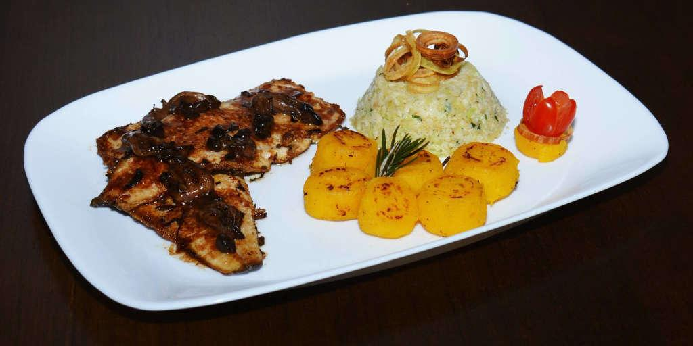
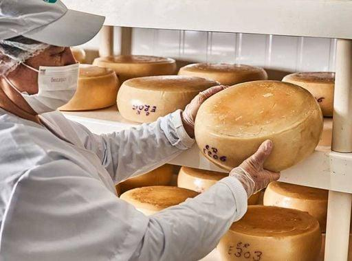
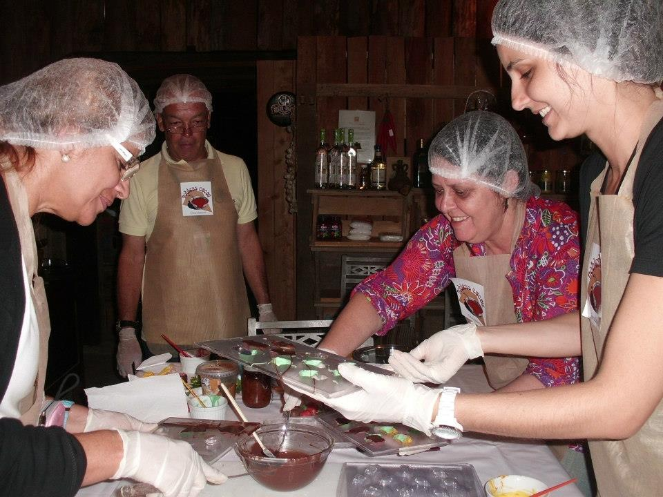

Sabores de Nova Friburgo
A gastronomia de Nova Friburgo reúne influências da cultura serrana e da colonização europeia. Entre os destaques estão as trutas, os queijos artesanais, chocolates, cafés e produtos cultivados na região. Restaurantes e cafés espalhados pela cidade e pelos distritos de Lumiar e São Pedro da Serra completam a experiência.

Truta
Um dos sabores tradicionais de Nova Friburgo.

Queijos
Queijos artesanais produzidos na região.

Chocolate
Deliciosos chocolates artesanais.